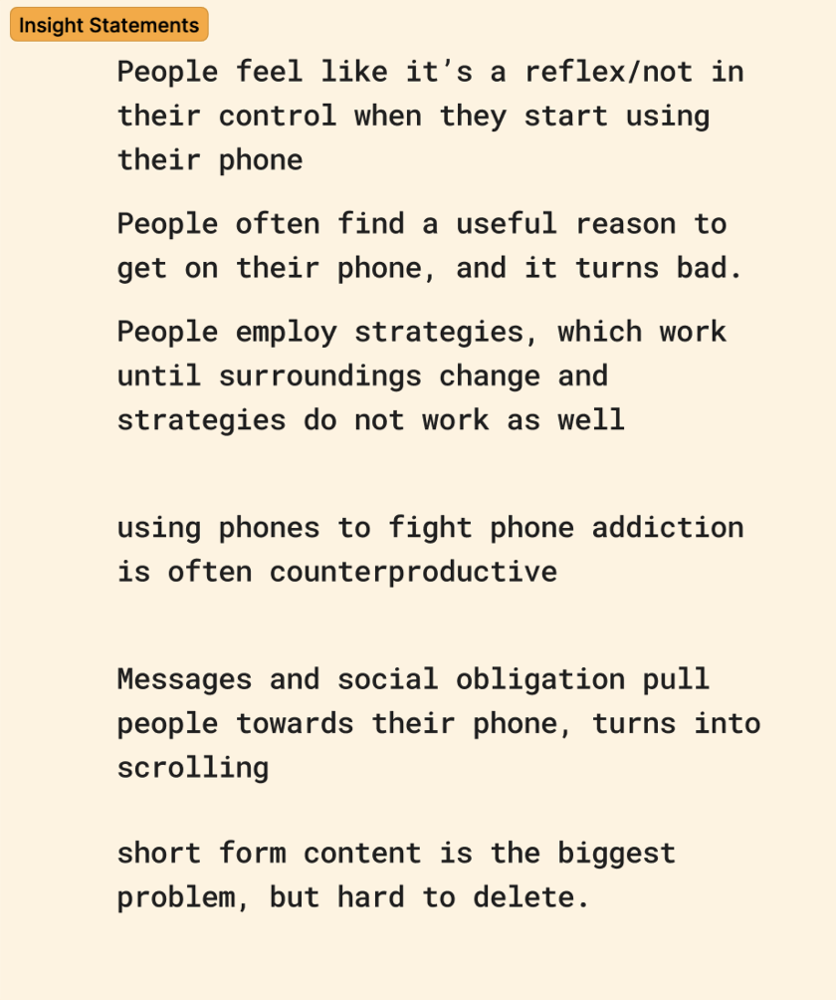

We started out by taking specific things from the interviews that we found to be connected and organizing them in themes.
The themes that we saw were:
With these themes, we were able to analyze the common thread of the gathered experiences to produce out Insight Statements (seen below) as well as our How Might We Statements.

Our How Might We Statements were:
With these How Might We Statements, our brainstorming process can begin!
For Brainstorming, we went through our HWM statements and tried to come up with ideas for each one. We then took what we had and divided them into categories (physical, digital, joke-ones) and chose the few good ones from there. When we had these around 10 ideas in front of us, we began to think about the bigger picture.
We defined our problem in two main parts: getting on the phone and getting off of it.
For the first part, we focused on how easily people can access their phones and the widespread habit of reaching for them without a real reason. Our goal here was to add some friction to this process.
For the second part, we observed that phones are not only too easy to start using but also hard to stop using. They blend into the environment so well and are so addictive that it is hard to get off when you are on. To address this, we aimed to reduce the cognitive load involved in disconnecting.
Considering both of these aspects and the ideas that we had, we chose the idea to create a lock box to put the phone in that would create friction in the process of the decision making of wanting to get your phone, and actually do it.
Addressing the getting off the phone aspect, we made the box have an option of doubling as a phone case that is slightly uncomfortable to be holding, meaning that the phone blends into the environment less and has less ease of use. More than being physically uncomfortable, it’s unwieldy - it stands out socially, and blends less easily into everyday actions in the same way that phones tend to.
With deciding on the product, all that was left for this unit was to create the storyboard!